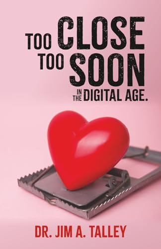
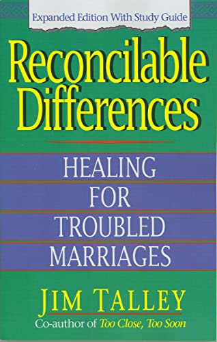
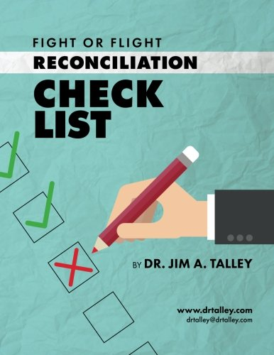

For over five decades, we've walked with couples and individuals through the hardest seasons of love and life — and helped them find the path home. Wherever you are, there is a way back.
Healing is not a moment. It is a direction — one honest step at a time.
A waymark is a marker placed along a trail — a stone, a post, a painted blaze — left by those who walked before so that no one who follows loses the way. When the road is overgrown and the fog rolls in, a waymark is what tells a weary traveler they are not lost. They are simply between one marker and the next.
That is what we do. We mark the way back — to your marriage, to your family, to your faith, to yourself.
Waymark is the next chapter of the life's work of Dr. Jim Talley, whose coaching helped countless couples move from the edge of separation back into restored, lasting relationships. We carry that work forward with the same conviction that grounded it: that healing is possible, that boundaries are an act of love, and that no relationship is ever truly beyond repair.
When you'd rather walk with someone than walk alone. Confidential, compassionate, and grounded in decades of experience.
Structured sessions for couples in crisis, rebuilding after betrayal, or simply wanting to grow closer. We meet you where you are.
An intensive, guided path for marriages on the brink — proven steps that move couples from separation back toward a lasting covenant.
Faith-centered guidance for the questions beneath the questions — purpose, forgiveness, identity, and the road back to peace.
One-on-one support for setting healthy limits — in marriage, family, and friendship — without guilt and without losing connection.
Direct, private conversations when you need wise guidance quickly. Call (405) 822-8300 to begin.
Begin in the right order. Preparation that helps couples build intimacy on a foundation strong enough to last a lifetime.
Start with a conversation. We listen, take stock of where you are, and name the next honest step — no pressure, no judgment.
Through one-on-one coaching, you follow a clear, proven framework — one marker at a time — with guidance whenever you need it.
Rebuilt trust, healthier boundaries, and a relationship grounded to last. And the tools to help mark the way for someone else.
Equip yourself to walk others back to wholeness — the Talley method, structured for pastors, lay coaches, and leaders who want to make a lasting impact.
A structured, proven framework you can carry into your own ministry or practice — and teach with confidence.
Learn alongside other leaders, with direct guidance from seasoned coaches who have walked this road.
Practical resources for the hardest conversations the couples in your care will bring to you.
The writings that have guided couples for a generation — now part of the Waymark collection.



Books beyond our own that we point people to on the journey.
Encouragement, practical guidance, and stories of restoration — new reflections on love, faith, and finding the way back.
We're preparing reflections on love, faith, and finding the way back. The journal opens soon — check back before long.
Get in touch →“Going through a divorce is one of the hardest things a person can experience. I found myself completely lost, not knowing who I was anymore or what direction my life was supposed to take. Waymark came at exactly the right time.
This program didn't just give me tools, it gave me a path when I couldn't see one. It helped me make sense of the pain, the confusion, and the uncertainty that comes with rebuilding your life after everything falls apart.
Jose was a significant part of my experience. His guidance was genuine and his support was consistent. He helped me find a way to function again during a time when just getting through the day felt like an accomplishment. He met me where I was and helped me find my footing without judgment.
I'm in a better place today and this program was part of that journey. If you're going through a divorce and feel like you're drowning, I would highly recommend Waymark. You don't have to figure it out alone.”
“We came in certain it was over. Waymark marked the way back to each other when we couldn't see two feet ahead. Today we're married, walking with God, and serving Him together.”
“I came to Waymark carrying years of resentment I didn't even know how to name. The coaching helped me see my marriage — and myself — with honest eyes for the first time. We're not the same couple who walked in, and I'm grateful every day we didn't give up.”
Begin with a single, no-pressure conversation. Tell us where you are, and we'll help you find the next marker on the path.